Chapter 4: Advanced Modeling Techniques

Advanced Modeling Techniques
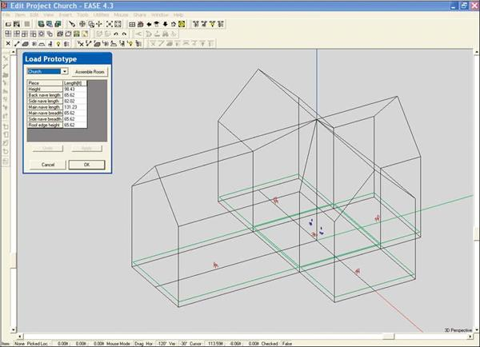
77
EASE 4.3 User’s Guide & Tutorial

Introduction
In Constructing a Model we covered the construction of a basic room model in EASE using the x,y,z coordinate method. In this section, we will become acquainted with the wide array of modeling tools offered by EASE 4.3.and explore the use of Create Shapes and prototypes to reduce the amount of modeling time required.
Certain complex shapes, curved surfaces in particular, can be both difficult and time consuming to enter with the techniques we learned while constructing our Model_1 Tutorial room. Other modeling tasks, such as adding row upon row of bleachers or installing a distributed loudspeaker system in the ceiling of a room can be very time consuming without using shortcuts. There also will be times when it would be nice to be able to cut a Face into two or three parts.
Fortunately, EASE includes a number of tools that make these tasks a snap. Please take the time to at least scan this section of the Tuto-rial to get a feeling for how these tasks can be handled. Knowing that these tools are available could save you hours on your next model-ing job.
Adding Windows and Doors
We did not include windows or doors in our Model_1 room. Now. let’s add windows to dress up our model.
As the first step, open the Model_1 room and do a Save Project As to create a new project. It’s always a good practice to save the original project before doing any major modifications. We’ll call it Model_2. Note that the Save File dialog box directs the new file to the Tutorial folder.
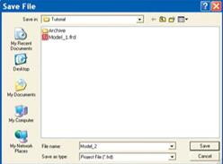
We’ll use the Coat and Duplicate/Displace features to add three 4-foot by 6-foot windows to the side walls for practice. We'll put them on 14 foot centers starting 10 feet from the rear wall and place them 3 feet up from the floor.
There are several ways to do create the window Face, the two most popular are using Duplicate/Displace and with Extrude. We'll go through the Duplicate/Displace method first.
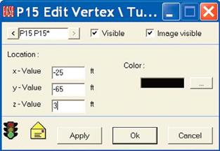
The coordinates for the first Vertex will be -25, -65, 3 and that is all the Vertex info we need to know to create the window's other 3 Vertices using Duplicate/Displace. Select the Insert Vertex [v] tool and then click on the screen to add the Vertex. Then enter the coordinate information into the pop up screen to properly locate the Vertex.
Next, right click on the screen to open the Mouse menu and select Dupli-cate to bring up the Displacement screen; type 4 into the y-value field to locate the other lower corner of the window and OK the move. Next, use Duplicate to create the top corners of the window (hint: displace the z lo-cation by 6). The next step is to add the Face. Click on the Add Face tool [f] and then on the window's Vertices to make the Face.
When the Properties folder opens, use WindGlass for the material. Then use the Coat feature to Coat the window onto the wall (don't for-get to make it a Two-Fold Face). Note that if you don't know the Face number of the wall, you will need to return to the Edit Project window to get it. You can't Coat a Face onto another Face unless you know its Face number.
78
Chapter 4: Advanced Modeling Techniques

The Extrude method is even simpler. Insert the first Vertex. Then right click and select Extrude. Put a 4 in the y axis field and a 6 in the z axis field. Click on OK and EASE will make the Face for you.
We'll use Duplicate/Displace to create the other Faces. Select the Face and enter 14 in the y axis field. Then put a 2 in the Repeated field.
Click on OK and it's done. It is that easy.
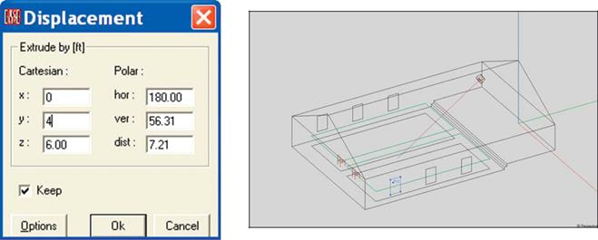
A word of caution about using Coat Of to paste one Face on top of another. EASE automatically moves the Face being coated onto an-other Face a small distance away from the other Face. By coating our first window onto the wall that faces into the room (by placing the first Vertex on the reflective wall, Face F6 in the model)l), we made sure the window would be placed inside the Room. If we had placed the first Vertex on the outside of the wall (Face F6* in the model), the program would have placed the window outside the room.
Using Edges & Vertex On Face Margin
Edges (lines drawn between two Vertices) only serve to add detail to a model for cosmetic purposes. They are not considered in any calcu-lations.
As an example of their use, lets use Edges to add four panes to the windows in our model. The first step will be to insert Vertices into the Margins (edges) of one of the existing windows.
Hint, you may want to Zoom In on the window to better observe the procedure.
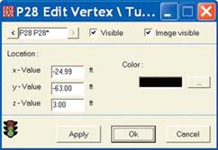
We’ll use the Vertex On Face Margin command to do this. Select one of the windows, open the Mouse Menu and select Vertex On Face Margin. Then click on one of the edges of the window, let’s say the bottom edge. The program will insert the Vertex into the edge of the window at the point you clicked. Now all you need to do is to make sure it is in the right position.
Select the Vertice and right click on it to open its Properties window. You’ll find that the only coordinate you need to change is the y coordinate. Correct it and then hit OK.
If you were to open the Window’s Properties folder now, you would see that the new Vertice has been added to the listing of the window’s Vertices. It is now part of the
window. Repeat the procedure to add a Vertice to the top of the window, Then click on the Insert Edge [e] tool and connect the two Vertices together. Repeat the procedure to put Vertices into the sides of the window and create an Edge between them.
If you have trouble selecting the new Vertice after it is inserted, use the Find [Ctrl F] command to select it.
79
EASE 4.3 User’s Guide & Tutorial

Finding Unknown Coordinate Locations
While modeling a Room, it is not unusual to encounter situations where an exact dimension is required, but not shown on the blueprints and the approximate figure provided by scaling is not good enough for EASE. EASE demands that Faces be flat (planar) and that Faces meet perfectly! It doesn't like holes!
Situations like this often occur in the Chancel area of churches when a section of the rear wall is brought forward to provide an exit into the Sacristy. See drawing below.
Z Dimension Unknown
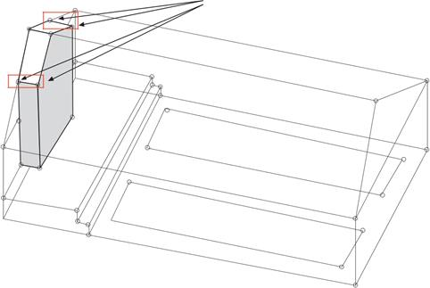
0, 0, 25
22,
-24, 0
-25, 0, 12
2, -24,
0
-2, -24, 0
-25, 0, 2
 -22, -24, 0
-22, -24, 0
-25, -20, 0
The problem is the z coordinate dimension for the Vertices that mark the intersection of the walls with the roof. The x and y coordinate fig-ures at the floor level are usually either given or are easy to measure and they are the same for the upper Vertices. The z dimension is the one that quite often is an unknown! Fortunately, EASE can help find this dimension. It’s done using the ability of EASE to Extrude Vertices and Edges.
The first step is to insert one of the four corner Vertices into the floor of the Chancel. Assuming the section being added is 4 feet deep and 10 feet across, the x, y, z Coordinates for the floor Vertices would be -5, 0, 2 & -5, -4, 2 and 5, 0, 2 & 5, -4, 2. First, Pick the Chancel floor Face (F5) and then right click to bring up the Mouse menu. Notice that there are two commands that deal with Vertices, Vertex On Face Margin and Vertex On Face. The Vertex On Face Margin will insert a Vertice into the Edge of a Face while the Vertex On Face places the Vertex within the Face.
We'll use the Vertex on Face Margin to add the Vertice at -5, 0, 2 and let EASE put in its mirror image Vertice at 5, 0, 2. Select Vertex On Face Margin and use your Mouse to place the Vertice at approximately its correct location on the edge of F5. Left click at that location to add the Vertice. EASE will put in its mirror image. Pick one of the two Vertices that were added, then right click on it to open the Mouse menu and select Properties. Change the x coordinate to -5 and hit OK.
Now, Pick the Chancel floor, Face F5 and open its Properties sheet. Note that the new Vertices have been added to the Face's descrip-tion. Next check the rear wall, Face F8, in the same fashion. You will find the new Vertices have also been automatically added to this Face.
We’ll use the Vertex On Face command to insert the floor Vertices at -5, -4, 2 and 5, -4, 2. Pick Face F5, and right click to open the Mouse menu and select Vertex on Face from the Mouse menu. Next, left click on Face 5 to add the Vertice and enter the correct coordi-nate information when the Properties sheet opens.
80
Chapter 4: Advanced Modeling Techniques

Note that we didn't actually have to use the Vertex on Face Margin and Vertex On Face commands. We could have just inserted one of the floor Vertices at its proper coordinate location and then proceeded on to the next step. It was good practice, though.
The next step is to Extrude one of the floor Vertices from the floor to the ceiling Face. Select one of the Vertices, right click to open the Mouse menu and then select Extrude to open the Extrude window shown on the left below. Note that you'll have to click on the Options button to open the Options portion of the window.
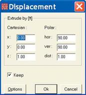
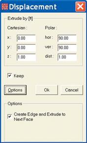
Insert 1 in the z field and check Create Edge and Extrude to Next Face and click OK. This will extrude the Vertex to the Ceiling Face and insert an Edge at the same time. See below.
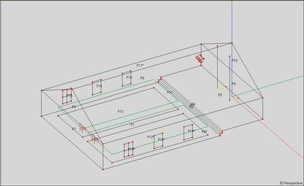
In this situation we didn’t have to insert a positive figure in the z field to tell the program what direction to Extrude to the next Face. There will be cases, though, where it will be necessary to tell the program what direction to Extrude and we wanted to acquaint you with the pos-sibility.
If you want to verify that the top Vertices were placed at the proper height, switch to the end view. You will see that they are.
81
EASE 4.3 User’s Guide & Tutorial

Now all we need to do is Extrude one of the Edges we just created 4 feet in the y direction and we'll have two of the three Faces we need in place. See below.
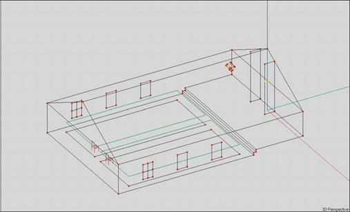
We could stop here, since you now know how to put in Vertices, Edges and Faces when one of the coordinates is unknown. As it turns out, you didn't need to know the unknown coordinate's exact location. However, let's continue the room modification to gain experience in modifying rooms.
We'll start by adding the third Face (the front Face) to the section we are building. The first step is to add the Vertex where the new section meets the apex of the roof. Pick the Vertex at the end of the building and use Duplicate/Displace to put in the new Vertex (Displace it -4 feet in the y direction). Now adding the third Face is as simple as connecting the five Vertices that define this Face. Use the Insert Face Icon or the f key command and insert the Face.
All that remains is to get rid of the surface areas that are no longer part of the Room. To do this, we’ll need to delete the chancel floor, the roof and the two back wall Faces and replace them with new Faces. Pick them and hit the Delete key. Then use the Insert Face [f] tool to put in the new Faces. In the process of adding the rear wall Faces you’ll discover that you need to add two new Vertices. See drawing on the next page. The best way to do this is to use the Vertex On Face Margin command. Otherwise, you’ll have to eventually blow away (delete) the two side wall Faces and redraw them to include the new Vertices.
Helpful Hints
1. Don’t be afraid to make a mistake. If you do, you always have the Undo command to fix it by stepping back to just before you made the mistake.
2. You may want to delete and replace the Faces one by one, instead of deleting all of them at once and then starting to redraw them. If you delete too much of a model at one time, it’s easy to lose track of which Vertice is which.
3. Before you start to enter a new Face, make sure you have a clear view of all the Vertices that will go into the Face so it will be easy to pick them. Use the scroll bars to turn and rotate the drawing and your Mouse wheel to Zoom in and out until you get a clear view.
When you are finished adding the new Faces, you'll notice that you have a Vertice left over, the one that used to be at the end of the roof peak. Blow it away by selecting it and then hitting the Delete key.
Note that if you had been building this model from scratch instead of modifying an existing model you would have had to create Ceiling Faces before you could Extrude the floor Vertice to the ceiling. To do this you would have had to insert a vertice at the end of the roof peak. When done, your Room should look like the one shown on the next page.
82
Chapter 4: Advanced Modeling Techniques
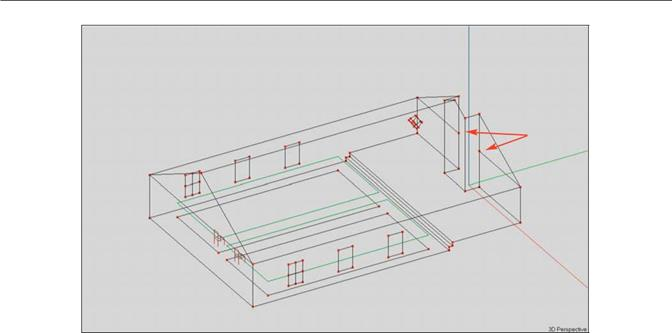
New Vertices
Distance Calculations
From time to time, you will want to know the exact distance between two points in the room; for example, between the loudspeaker and a listener at the rear of the room. EASE can do it for you.
Put in a Listener Seat at the rear of the room if your model doesn’t already have one. Start by clicking on one of the Audience Areas at the very rear of the area. Then use the Mouse menu to place a Seat on Area.
Next, Pick the Loudspeaker, then right click on it to bring up the Mouse menu and select Keep For Distance [Shift + k). Then Pick one of the Listener Seats, right click for the Mouse menu and select Show Distance [Shift + 0 (zero)]. This will introduce a pop up screen showing the angular relationship between the two points, the physical distance between them (the distance between the Loudspeaker and the Lis-tener Seat) and the time needed for sound waves to cover the distance.
Note that as long as Keep For Distance is selected on the Loudspeaker, you can also easily check the distance between the Loudspeaker and any point in the room just by clicking on the desired point and then using Shift + 0 (zero).
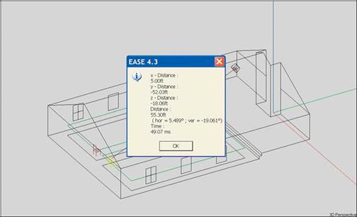
83
EASE 4.3 User’s Guide & Tutorial

Create Shape Examples
The Create Shape 3D, Line Array and Circular Array sections of the Insert pull down menu can be used effectively to create complex shapes with a minimum of effort. Create Shape is also used to place columns and other objects inside the room.
Lets create a new name for this model. We'll call it Circus. Open EASE and choose New Project under the File menu (or use the desktop Icon to Start Working and Create Project) and enter the name Tutorial in the Hall field and Circus in the Project File Name field. We want to place the Circus files in the Tutorial folder. Approve the setup by clicking on Create and then go to Room Info/Data under the View pull down menu and enter Circus in the Project Version field. Then click on OK and the Edit Project module will open automatically.

For the first exercise, let’s create a room similar to the Model_1 room we built in Section 3 of this Tutorial. We'll do this by first making a box and then adding a roof to it. Select Create Shape 3D from the Insert pull down menu and then choose Cuboid (sometimes called a shoebox) from the drop down listing at the top of the Create Shape window.
Notice that you can choose between a Cuboid, Pyra-mid, Cupola, Cylinder and Cone. We’ll practice with all of these before we finish this section of the Tutorial.
We want to make a room 75' long, 50' wide and 12' high (not including the roof). Notice that we inserted No into the With Ceiling box field. We don't want to put in a ceiling, because we will be adding the roof (ceiling) as the next step in building the room.
The Hollow Polyhedron box determines the orientation of the Faces. When checked, it places all the reflective surfaces (the Faces) facing into the room which is what we want. Clicking OK will generate the room below.
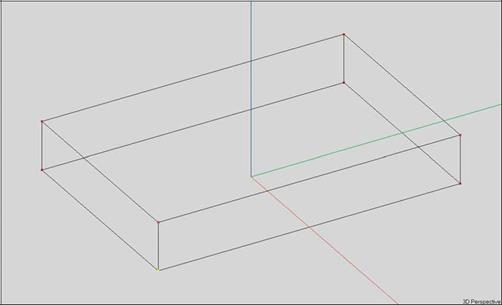
Notice that the program put the 0, 0, 0 point in the center of the room instead of at one end. We could have put this point at one end by changing the Center (Ft.) y location from 0 to -37.5 in the Create Shape dialog box. (Convention suggests that the y= 0 point should be at the front wall of the room or the front of the stage, with the room extending in the negative y direction.) The reason for this is that EASE, by default, aims the loudspeakers in the negative y direction.
84
Chapter 4: Advanced Modeling Techniques

If we want to change the 0, 0, 0 location at this time, we can easily do so by going to the Tools pull down menu and selecting Move Room Origin. Move Room Origin opens a screen that allows you to chance the 0, 0, 0 coordinate locations. Try it out; insert -37.5 in the y field and OK the change.
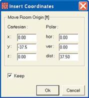
Note that Move Room Origin moves the Room and not the point of origin. That’s why we used -37.5 instead of 37.5. Remember this point as it will come up again as we move through the Tutorial.
We also could have created this cuboid by inserting a single Vertex into the drawing and then ex-truding it the proper distances along the x, y and z axis. In EASE, there usually is more than one way to quickly and easily accomplish an objective. The choice of which method to use often hinges upon personal preference. At other times it can make a big difference in the amount of time re-quired. Our goal is to make you aware of the various options.
Our next step will be to add a peaked roof to the model. Return to Create Shape 3D under the In-sert pull down menu only this time select Pyramid. When the Create Shape/Pyramid dialog win-dow appears, fill in the data fields as shown.
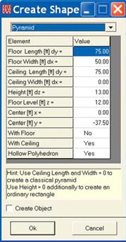
Notice that we placed the Floor Level (the base of the pyramid) at 12 feet (the height of the walls) and said Yes to With Ceiling, but No to With Floor. We also set the Ceiling Width to 0 and the Ceil-ing Length to 75. Setting the length to 0 would generate a true pyramid. Clicking on OK will add the roof to our model and produce the room shown below. Note that the program also created the two Faces that represent the triangular top sections of the end walls.
At this point, you may want to check the orientation of the Faces to verify that EASE entered them correctly. You'll see that they are correct. You also may want to check the Vertices to verify that EASE did not create "stacked" Vertices when it placed the roof on top of the walls. Once again, you will find that EASE took care of everything.
Create Shapes is a quick and easy way to create a room. As a general rule, though, the Prototype method is even faster when one of the prototype rooms closely resembles the room you are con-structing. Prototypes usually include Audience Areas, Listener Seats and Loudspeakers while these items have to be added to rooms created with Create Shapes
In this case, for example, the Auditory w/Peaked Roof and Church A rooms would probably be a better choice than Create Shapes. Refer to pages 108 to 121 for more details on the use of Proto-type Rooms.
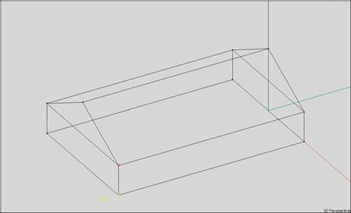
85
EASE 4.3 User’s Guide & Tutorial

Creating Curved Surfaces
For our next modeling exercise, let's create a room with a curved rear wall and a flat ceiling. Our room will have a 10' ceiling and be 50' wide and 80' long overall. The rear wall will have a 10 foot arc.
We'll start by creating the curved wall. First, we need to get rid of the room we created in the previous exercise. Two clicks on the Undo tool button should take care of this.
The first step will be to put in the Vertices representing the bottom of the wall. Select Circular Array/Vertices from the Insert pull down menu and use the left mouse button to insert 3 Vertices. The first two Vertices represent the ends of the Arc and the third, the apex of the Arc. Don't worry about where to place the Vertices, we'll be placing them in the right location in the next step.

After inserting the first two Vertices, the Insert Circular Array win-dow will open. Ignore it and insert the 3rd Vertice.
The Insert Circular Array window allows you to precisely define the Arc's characteristics. Starting Point(ft) is the beginning of the arc, Point On Arc(ft) is the apex and Ending Point(ft) is the finish point. The figures shown are the proper ones for the room we are creating. Enter them into the proper fields. Hint: Use your Tab key to move from field to field.
You will see the Vertices move on the screen as you type in the correct locations. If they move off the screen, you will need to Zoom Out or hit the Home key to see them after you finish enter-ing the location coordinates.
We chose to define the Arc with 10 points. This will result in a wall having 9 Faces. Using more points would create more Faces and a smoother arc, but would also lengthen computation times during the simulation routines. Approving the setup by clicking on OK (or hitting Enter) will produce 10 Vertices in the shape of an arc.
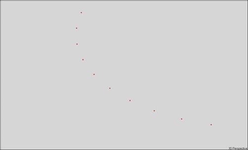
86
Chapter 4: Advanced Modeling Techniques

The next step is to turn these points into a Face. Choose the Insert Face [f] tool and connect the Vertices together to make the Face. See below.
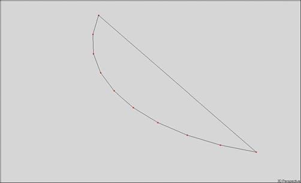
Using Extrude
We will use the Extrude feature of EASE to add walls and a ceiling. Pick the floor Face and then right click to open the Mouse menu, select Extrude and enter 10 into the z field of the Displacement dialog box that opens.
This will extrude the Face (floor) up 10 feet and create the curved wall and associated ceiling.
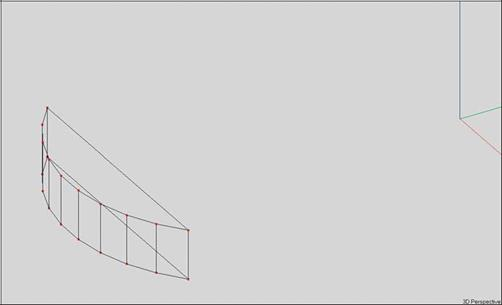
Notice that a front wall (face) was also created. We do not need this, so pick it and blow it away (hit the Delete key).
87
EASE 4.3 User’s Guide & Tutorial

Now, we can add the rest of the room. We'll do this using Create Shape 3D/Cuboid under the Insert pull down menu. We'll add a cuboid 70' in length, 10' in height and 50' in width, the size of the room minus the curved end section, which represents the rear wall of the model. Note that the default location for Y is 0,0,0. Since we created the curved section based on the 0, 0, 0 point being at the center of the rear wall, we'll need to move this point by -35. Insert -35 in the Center [Ft.] y field.
Approving the insertion by hitting OK will add the rest of the room.
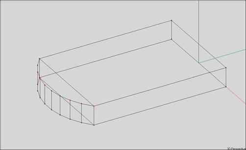
Notice that once again we have an extra Face. Delete it and the room is complete except for adding the surface materials. Simple, isn't it?
Hint: The quickest way to add the surface materials is to Pick a Face, and use Ctrl + F3 to do a global edit of surface materials. Select the most common material used in the room, for instance PLAST/LTHR, and press OK to turn all Faces (surfaces) into PLAST/LTHR. Now, only the Faces whose surface material are not PLAST/LTHR need to be changed.
If the curved wall had been a semicircle, instead of an arc, we would probably have used Create Cylinder under the Create Shape 3D menu to create the curved section of the room. We'll take a look at using Create Cylinder in the next exercise.
Note that we could also have created the cuboid section of the room by Extruding one of the corner Vertices 50 Ft. in the x direction, 70 Ft.
in the y direction and 10 Ft.. in the z direction. Try it, it works.
In actual practice we might have created the cuboid section of the Room first and then added the curved rear section of the Room. Either way works. It’s mainly a matter of personal preference.
Now it’s time to move on to another example, so use the Undo icon to delete the room we just created. Be aware that if you had used F6 to check and save data at any point while building the Room, the Undo command wouldn’t completely delete the Room. It only goes back to the last saved point.
88
Chapter 4: Advanced Modeling Techniques

Creating Rooms with Curved Ceilings and Walls
For our next exercise, we'll create a more complex room. The basic structure is 300' in width and length and has 60' walls. The peak of the dome is 120' above the floor level. The side entrance extends out 90 feet from the building and is 75 Ft. wide. We will call this room Circus_2
Notice that the building is symmetrical except for the side entrance. We'll do all the modeling we can in the Symmetrical mode and then
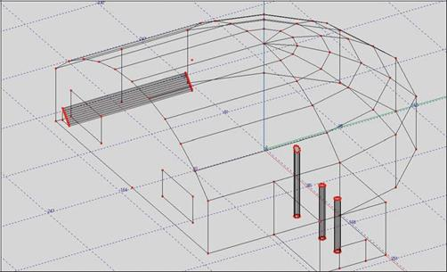
turn off Symmetry and add the side entrance.
We will start the modeling process with the curved wall and domed ceiling. Select Create Shape3D and use the drop down arrow to select Cylinder from the Insert pull down menu to open the Create Shape /Cylinder window. Fill in the fields as shown on the next page and then approve the insertion by clicking on OK.
Notice that we asked for a Cylinder with a floor, but without a ceiling and for a Hollow Polyhedron. We want the reflective Faces on the in-side of the cylinder. We also chose 12 Steps instead of the default value of 10 because this is a large room and we wanted the higher reso-lution.
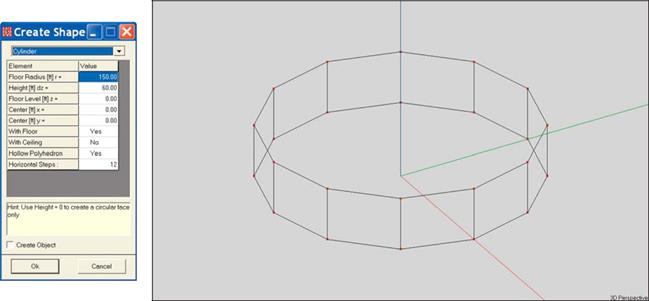
89
EASE 4.3 User’s Guide & Tutorial

The next step is to add the dome (cupola) to the top of the cylinder. Return to the Create Shape 3D menu and select Cupola.
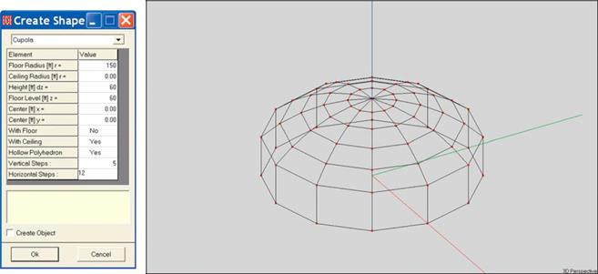
Notice that we specified a dome with a Ceiling and no Floor and placed the Floor Level at 60 Ft., the height of the walls. Clicking on OK produces the model shown.
The next step is to "blow away" the Faces we don't need. It's an easy task since in the symmetrical modeling mode EASE will delete half of them. Pick one of the Faces that need to be deleted and hit the Delete key. You will probably find this process easier if you start with one of the wall Faces as there are fewer of them to delete.
Notice that after you have deleted a Face, the program helps you by Picking the Face numbered one lower than the Face you deleted. You don't have to actually Pick every Face. EASE does it for you. The only thing you have to watch for is inadvertently deleting the floor while you are getting rid of the unwanted wall and ceiling Faces. Haste makes waste.
You may also want to Zoom In on the Faces at the top of the dome when you are deleting them. It make it a little easier.
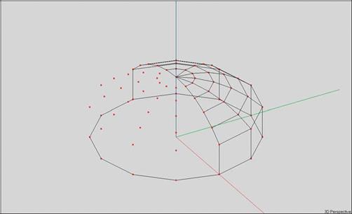
90
Chapter 4: Advanced Modeling Techniques

When all the Faces have been deleted, your model will look like this.
All that remains is to delete the unwanted Vertices. This is done simply by using the Shift +Ctrl + F12 key stroke command that deletes all unattached Vertices. The result appears below.
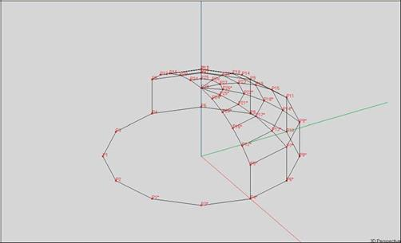
The next step is to change the shape of the floor. The uncovered half needs to be a rectangular instead of being circular. We’ll do this by moving (Displacing) the Vertices in that section of the floor to form a rectangle.
Select either Vertex P3 or P3*. If you aren't sure which ones they are, there are two easy ways to find them. One is to use the Ctrl + F Find command and enter P3 or P3* in the Find field; the other is to turn On all the Vertex Labels.
You can also Pick the floor Vertices one by one and use the Status Bar at the bottom of the window to check its Vertice number until you find P3 or P3*..
91
EASE 4.3 User’s Guide & Tutorial

Next, use the right Mouse button to open the Mouse menu and select Properties or hit F4 to open the Property sheet for Vertex P3. Change its x coordinate to -150 and OK the setup. Then, select P1 and change both its x and its y coordinates to -150. When you finish this step, the model will look like the one shown below.
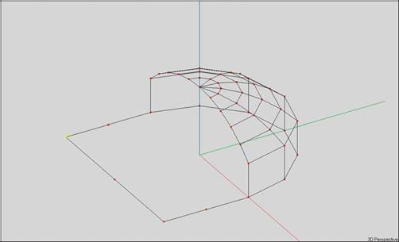
Now, its time to add the curved ceiling over this section.. We'll start by adding the Vertices using the Insert Circular Array/Vertex function we used in the previous exercise.
For this exercise though, we'll use a somewhat different tact. We’ll change the editing plane in which we are working to make it easier to in-sert these Vertices. We’ll also change to the y (end) view. There are several ways to do this. One way is to open the Options menu by clicking on the Options [F9] button in the tool bar section and select the Editing tab. You can also change to the end view, right click on the screen to open the Mouse menu and select xz Plane Value. Another and far easier way is to use the shift +y key command. It automati-cally switches to the end view and opens the Editing tab. Try it; it works.
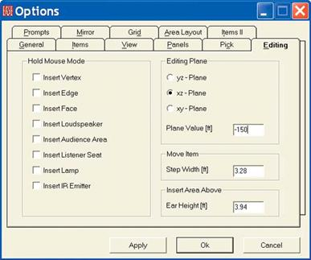
92
Chapter 4: Advanced Modeling Techniques

Set the Editing Plane to the xz - Plane and the Plane Value to -150. This assures that we will be working in the end wall of the structure.
Now, select Circular Array/Vertices from the Insert pull down menu. Notice that the cursor changes to a cross. Click on the two lower cor-ners of the roof and then move the cross hair to the peak of the roof and click there.
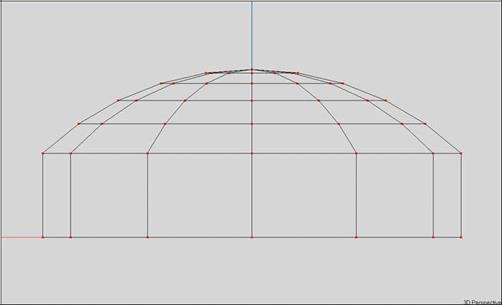
The Insert Array window shown below will open as you place the second point and you may have to move it in order to place the third point.
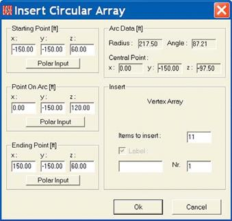
Notice that the program placed all 3 Vertices at -150 on the Y-axis. Some of the other coordinate values are probably not entirely correct, so change them to the correct figures shown below. The only thing left is to tell the program how many Vertices we want in the arc. Eleven is the correct number, as eleven is the number of Vertices in the edge of the existing dome. Insert 11 in the Items to Insert field and hit OK to add the Vertices. You'll probably have to switch to the 3D view to see them.
93
EASE 4.3 User’s Guide & Tutorial
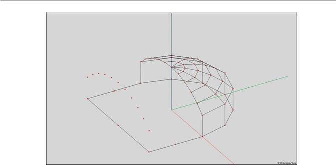
Now, we can add the Faces. Select the Insert Face [F] button in the tool bar section and add the Faces one by one. Be sure to watch the Face orientation as they are added. If incorrect, use the Invert button in the tool bar section. Don't forget to include Vertex P3 in the side walls and Vertex P2 in the end wall. When all the Faces are added, the room should look like this.
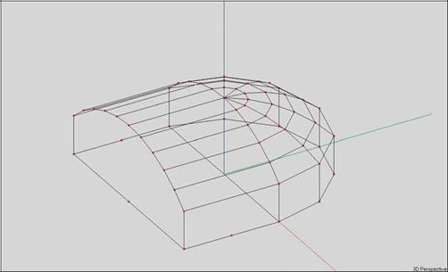
We chose this method of entering the end wall and the roof to illustrate the technique and use of the Create Circular Array/Vertices feature. There is, however, a far easier and faster way to create the end wall and roof. It's the Extrude feature. We would have added an end wall Face to the model so we could Extrude it and instantly create in one simple step all the walls and ceiling sections we just finished putting in one by one. After the extrusion, the end wall Face we created so we could Extrude it would have to be deleted, but that's easy to do. We also would have an extra floor Face in the area we extruded which would have to be deleted. Nevertheless, the Extrude method would would have been easier and much faster.
If you haven't been saving your work regularly while you created this model, now would be a good time to do so. Just hit F6.
94
Chapter 4: Advanced Modeling Techniques

Quitting The Symmetrical Modeling Mode
The next major step is to add the side entrance to the room and its two support columns. Refer to the drawing on page 89 if you have for-gotten what the completed room looks like. So far, we have been working in the symmetrical mode. We now need to change this as the side entrance is on just one side of the structure.
It is important to note that once you have left the symmetrical mode you shouldn't try to return. To show you what happens, go to the Show Vertex Table (click on the Vertex Table icon) to see how many Vertices are being used. The number, if you have done everything correctly, is 34 which does not count the mirrored (*) Vertices. Next, close the Vertice Table and pick one of the mirror image Vertices, P3* for exam-ple.
Now right click on the screen to open the Mouse menu and select Room Data. Then change the editing mode from Symmetrical to non-symmetrical by clicking on the Room Symmetric box. Click on OK to initiate the change. Now if you go back to the Show Vertex Table; you will see that 59 Vertices are listed. You will also note that the P3* Vertex selected is now designated P36. The numbers of all the mirrored Vertices were changed. The same holds true for all the Mirrored Faces. They, too, were renumbered.
What happens if you try to go back to the symmetrical modeling mode is that EASE puts in mirror images of all the existing Vertices and Faces. You end up with 2 of everything. This is why you shouldn't try to go back.
Cutting a Face Into Two Parts (Using Fixed Cut)
Now, it's time to add the side entrance. What we need to do is cut Face F26 (your drawing may show different Face and Vertex numbers) in half and build the entrance hall out from the right hand section. To do this we need another Vertex, one at the top of the Face directly above P36. We could add this Vertex using Duplicate/Displace. However, using this approach would mean that we would also have to blow away Face F26 and the roof section directly above it, and then enter 3 new Faces. This is not difficult to do, but it's not the easiest way.
An easier way is to use the Vertex On Face Margin and Fixed Cut features of EASE.
Select Face F26 (it could be another number in your model if you didn’t exactly follow the Tutorial instructions), then right click to open the Mouse menu and select Vertex On Face Margin. The cursor will now change to cross-hairs; center them on the edge of Face F26 above P36 and click to insert a Vertex (P60) into the edge or margin of the Face at that point.
It should be noted that the program will automatically also insert Vertex P60 into the roof section Face above Face F20. Next, select Vertex P60 and open its Property sheet to adjust its position. It should be placed at -75 on the Y axis.
The next step is to use the Fixed Cut function to cut the Face into half. Select Fixed Cut from the Tools pull down menu and then click on Vertices P60 and P36. This will divide the Face into two parts at that location.
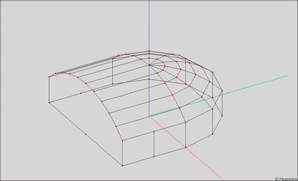
95
EASE 4.3 User’s Guide & Tutorial

We'll use the Extrude function of EASE to complete the entrance. Pick Face F26 (it could be an other number in your model) and use the Mouse menu to select Extrude and open the Extrude Displacement dialog box. Enter 90 in the x: field and then hit OK and EASE will build (extrude) Face F26 outward 90 feet to construct the entrance.
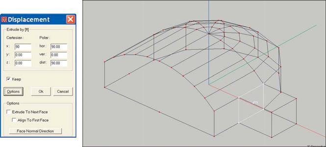
In one simple operation you have eliminated the need to individually enter 5 Faces; the EASE Extrude feature did it for you.
We no longer need Face F26 (in fact, it's actually blocking the entrance way), so blow it away by selecting it and hitting the Delete key.
Now, would also be a good time to check the orientation of the entrance way Faces. One way is to Pick them one by one and if they are in-correctly oriented, use the Invert button in the Tool Bar section or the Mouse menu to individually turn them around. You will probably find they are all incorrectly oriented.
We could have avoided this by first inverting the Face being Extruded. It, the Face being Extruded needed to have its exposed (reflective) surface facing the direction of the extrusion.
Note that we extruded the entrance way from a Face that was perpendicular to the Y axis, so all we had to do was extrude it 90 Ft. along the X axis. If we had placed the entrance way on one of the angled walls, and wanted it to be perpendicular to the wall, we would have en-tered 90 inthe Distance field, checked Align to First Face and pressed the Face Normal Direction option offered by the Extrude function.
Selecting this option would have told the program that we wanted the entrance way to be at right angles (perpendicular) to the selected Face. Extrude would then have calculated the correct extrusion angles.
The EASE Extrude function is a powerful modeling tool and one that you should get to know well. It can save you hours of modeling time once you become familiar with it and what it can do.
We'll practice with it again in the next exercise.
96
Chapter 4: Advanced Modeling Techniques

Adding Interior Shapes
Next, we'll add the two entrance way columns. The two columns are placed 30 feet apart on the center line of the entrance.
Open the Create Shape 3D menu under the Insert pull down menu and select Cylinder. The correct parameters are shown in the left Dis-placement dialog box shown below. The parameters for the second column are shown in the right Displacement dialog box.
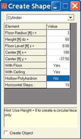
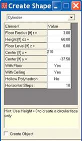
Note that both With Floor and With Ceiling show Yes in their Value field and that Hollow Polyhedron shows No. In this case, we don't want a Hollow Polyhedron as we want the reflective Faces looking out into the room. We said Yes to With Ceiling and With Floor to allow EASE to insert these Faces into the entryway floor and ceiling without creating Holes.
Now go back to Create Shape 3D/Cylinder and put in the parameters for the second column. Note that EASE makes this easy by picking up the parameters from the previous Cylinder. All you need to do is change the Center x location. The screen on the right above has the correct settings.
Be aware that this will throw off the room surface area calculations slightly unless you also Coat the top Faces of the columns to the ceiling Face and the bottom Faces to the floor Face. This will tell the program to subtract the surface area of these Faces from the overall surface area. You do not need to turn the top and bottom Faces into 2-Fold Faces.
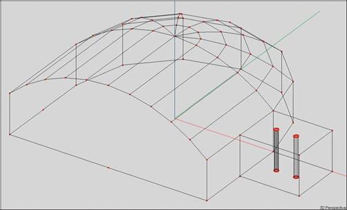
97
EASE 4.3 User’s Guide & Tutorial

Using Extrude Faces
Before we move on, let's explore another use of Extrude.
Let's place a floor to ceiling column inside the main room where the ceiling slopes and the coordinates are unknown..
Open the Create Shape 3D/Cylinder window again and change the Center [ft] x coordinate to 130 and the Height to 0. We only want to put in the base of the column at this time. OK the insertion.
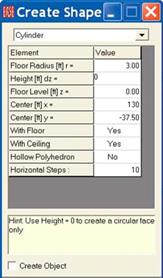

Then select the Face we just inserted, right click and select Extrude. Note that you probably will have to Zoom In on it in order to select it.
We want to extrude the Face in the + z direction, so enter 1 in the Height [ft]dz field.. EASE needs to know what direction to extrude the Face.
Then, open the Options section of the Displacement window and put a check in Extrude to Next Face.
Hit OK and the program will extrude the column base to the ceiling and place the top of the column in the slanted ceiling Face.
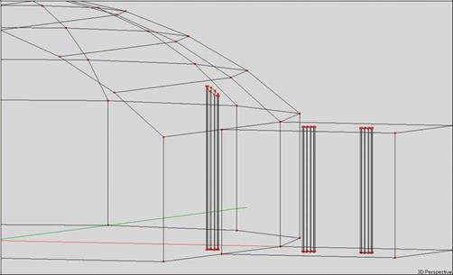
98
Chapter 4: Advanced Modeling Techniques

Adding Doors and Windows
Now it’s time to add the entrance-way door to our model. The door will be centered in the entrance way and will be 30’ wide and 24’ high.
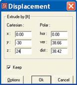
Using Coat Feature
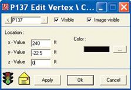
We know from an earlier exercise that the easy way to do this is to Coat a two-fold Face onto the entrance-way wall. All you need to do is insert a Vertice at x = 240, y = -22.5, Z = 0 and then ex-trude it 24’ up and -30’ in the y direction to create the Face representing the door. Then use the Properties folder to turn it into a Two-Fold Face and Coat it onto the wall Face. It’s a simple 3-step procedure.
By Modeling into a Wall
Let’s explore what would be required if, for some reason, we didn’t want to use the Coat feature.
Then we would have to model the door into the Face. This would entail creating the door Face, blowing away the existing entrance-way wall Face, and redrawing it, a more complicated procedure.
The steps would be:
1. Select the entrance-way Face and use the Vertex on Face Margin procedure to place a Vertice (one of the lower corners of the door) in the edge of the entrance-way wall Face.
2. Use Vertex on Face Margin to place the other lower corner of the door in the edge of the entrance-way wall Face.
Note: If we did not use the Vertex on Face Margin to place these two Vertices, we would also have to eventually blow away the en-trance-way floor face and redraw it.
3. Use Duplicate/Displace to put in the two Vertices representing the top of the door.
4. Use Insert Face to create the door Face.
5 Blow away the entrance way wall Face and re-enter the wall Face to include the 4 door Vertices. Remember. EASE wants all Ver-tices that lie on the edge of a Face to be included in the Face.
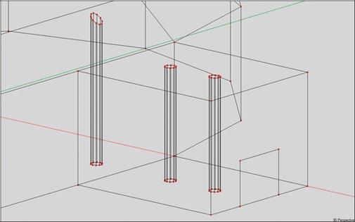
99
EASE 4.3 User’s Guide & Tutorial

Using Sequence
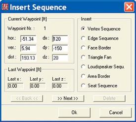
Our next exercise will be to add two 60' by 30' windows to the flat face of the structure using the Sequence feature. We will put the windows 20' above the floor and space them 120' apart. Open the Insert pull down menu and select Sequence. This will open the screen shown below.
Note that Sequence can be used to insert Vertices, Seats and Loud-speakers, as well as several other items. We will be inserting Vertices. The first step is to locate the first Vertex by inserting its x, y, z coordi-nates into the dx, dy and dz fields. Insert 120, -150, 20. Then press the Next button
Note that the coordinates you inserted now appear in the Last Waypoint section. The window is 60' wide, so we want to place the next Vertex 60' closer to the y-axis. Insert -60 into the dx field and then hit Next. The third Vertex needs to be placed 120' feet from the last one, so enter -120 into the dx field, hit the Next button and insert -60 for the 4th Vertex lo-cation. Note that the locations of the new Waypoints you are entering are relative to the location of the previous Waypoint.
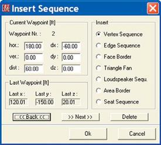
Finally, OK the Vertex sequence and EASE will place the four Vertices in their right location.
The bottom Vertices are now in place. To add the top Vertices, repeat the steps given above, except change the dz coordinate by 30. Remem-ber, the windows are 30' high. As you can see, this feature allows you to insert a number of irregularly spaced items quickly and easily.
All that remains is to create the window Faces and Coat them onto the wall Face. Use the Insert Face [F] icon in the tool bar to add the Faces. Don't forget to identify them as two-Fold Faces and to Coat them onto the wall Face.
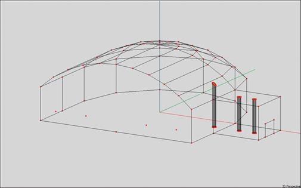
100
Chapter 4: Advanced Modeling Techniques
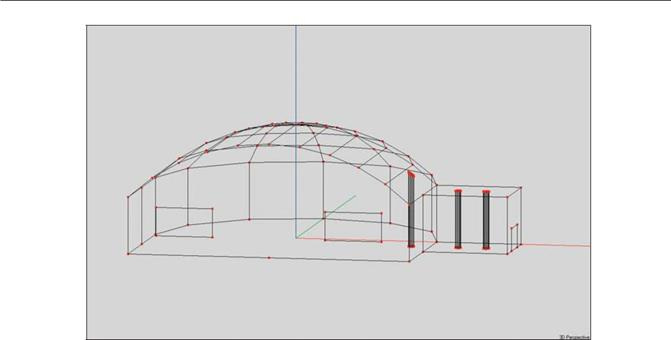
As I'm sure you realize, these windows could just as easily been created with the Duplicate and Displace technique we used to add win-dows to the Tutorial room (reference page 78). We used Sequence in this exercise merely to demonstrate the technique. Also note that if the Vertices had been evenly spaced, we would have used Insert Line Array , instead of Sequence. We'll practice using the Insert Line Array feature a little later.
Using Insert Audience Area
The next step is to add an Audience Area to our building using the Insert Audience Area command and the graphic modeling capabilities of EASE. First, we will need to set the level for the Audience Area plane. Use the right Mouse button to open the Mouse Menu and select Options [F9] and then open the Editing window. Change to the xy Plane and set the Plane Value (the height of the plane) to 3.94', the ap-proximate height of a seated listener's ear.
Note that you could have more easily accomplished the same thing using the shift + z command. It would have taken you directly to the z (overhead) view.
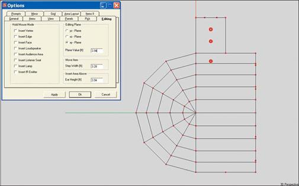
101
EASE 4.3 User’s Guide & Tutorial

Next select the Insert Audience Area [A] tool and graphically insert the Audience Area by placing its four corners at their approximate loca-tion. As soon as the fourth point is inserted, the dialog window shown below will open giving you an opportunity to fine tune the size and lo-cation of the Audience Area.
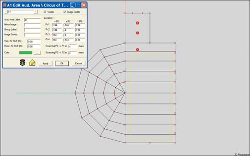
Click on OK and the Audience Area will be correctly added to the model.
Adding Loudspeaker Grids
Now, lets add a distributed loudspeaker system to our room. We'll put in a grid of overhead loudspeakers 30 feet above the floor on 30' centers. First, open the Editing tab under Options (F9 or right click on the screen and select Options from the Mouse men) or go direct to the Editing tab with Shift + z and change the xy plane level to 30'. If you used Shift + z to open the Editing window you are now using the z or overhead view of the room. If you didn't use Shift + z to reach the Editing tab, switch to the Z view using the Z (Plan View) icon or the z key command.
While in the Options folder, you may also want to turn on the z-Grid to aid in placing the loudspeakers. Select the Grid tab and then check z-Grid. Hit OK.
Open the Insert pull down menu and select Linear Array/Loudspeakers. Next, use the cursor to place the end points of the first loud-speaker row at its approximate location. This will open the setup window shown below. The Starting Point and End Point coordinates most like won't be entirely correct, so insert the correct coordinates (see below). Then, insert the number of loudspeakers desired, in our case 9. If you want the loudspeakers identified (labeled) put a check in the Label box. Now, click OK to insert the first row of loudspeakers.
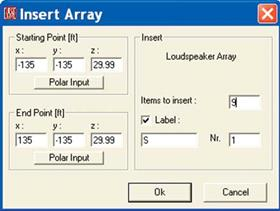
102
Chapter 4: Advanced Modeling Techniques
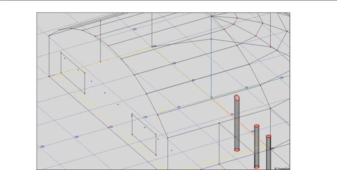
Use the same procedure to insert the other four loudspeaker rows and you are done in a minute or two. What you want to do is to de-crease the y coordinate by 30 for each row of loudspeakers.
Your room should now look like the one shown below.

Next, Pick one of the loudspeakers and right click to open the Mouse menu and then select Change All Same. This will open a Choose Speaker window and allow you to quickly select the loudspeaker you want to use and change all the loudspeakers to that model. Note that you can also accomplish the same thing with the Ctrl + F3 key command.
At this point, all the loudspeakers are probably aimed down the Y-axis instead of being pointed down at the floor. Verify this by picking one of the loudspeakers, opening its Properties folder and turning On Show dB Cov Cone.
You need to change the Vertical Angle of each loudspeaker to -90.
103
EASE 4.3 User’s Guide & Tutorial

There are several ways to do this.
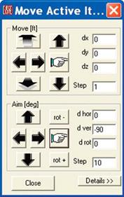
One is go to the Tools pull down menu and select Move Loudspeaker Group. This will open a selection window. Select all the Loudspeakers in the first row and hit OK. This will turn all the Loudspeakers in that row ”Active” and open a Move Active Items window. Insert -90 in the d Ver field and press the Go To Finger icon. This will re-aim all the loudspeakers in that row. Then follow the same procedure for the other four rows. Note that you must do each row individually.
You can also use the Loudspeaker Table. Open it and select all the loud-speakers using the Left Mouse button and the Shift key.
Then go to the Tools pull down menu and select Set Value To. This will open a Select Value window. Select Ver[o] and hit OK. This will introduce a prompt asking for the value, insert -90 and OK. Exit the Loudspeaker Table and check the loudspeaker aiming. You'll see that all of them have been re-aimed. It goes quickly.
Hint: Another way to quickly insert a number of loudspeakers and a way employed by many users is to insert one loudspeaker, set its aiming and other properties including the power level correctly, and then use the Du-plicate/Displace and Repeat features to add and locate all the other loud-speakers. With this technique, all loudspeakers will be properly set up and aimed correctly when they are inserted.
104
Chapter 4: Advanced Modeling Techniques

Adding Steps / Bleachers
Our final exercise in the Circus project will be to add bleachers along one wall. Let's make them 140' long and start them 6.5' from the end wall. We'll let them come 15 feet out into the room and assume that each seat is 18 inches deep and 18 inches above the previous seat. For the moment, let's also assume the seats have no backs.
Amazingly, we only need to know the x, y, z coordinates for one Vertex to construct the bleachers. These are needed to locate the first Vertex after it has been inserted using the Insert Vertex [v] con. Then, its a simple matter of using the Duplicate/Displace function to add the other three Vertices that define the first row of seats and to create the Face. Duplicate/Displace and Repeat can then be used to make additional rows of seats.
Use -135, -143.5, 1.5 as the coordinates for the first Vertex. Then Duplicate it and Displace (move) it 1.5 ' closer to the wall (-1.5). Then Duplicate/Displace it 140' along the Y axis; then Duplicate/Displace this Vertex 1.5' away from the wall. Make a mental note of the Vertices P numbers as you put them in.
Use the Insert Face [f] button to make the Face representing the first row of seats. Make sure you identify it as a Two-Fold Face. It is suspended in the room (not touching any wall or floor surfaces, so it needs to be a Two-Fold Face.
You may run into problems putting in this Face using the Insert Face tool, because the Vertices at the ends of the Face are so close together on the screen that it's hard to pick the right one. At other times, the program will have difficulty telling which of the Vertices you want to select. When this happens, a prompt asking you to choose between two or more Vertice numbers will appear. Make the choice and click on OK.
Using the Zoom key commands (F11 & F12) or the Ctrl + Arrow keys to zoom in on the Vertices will help make this process easier and faster.
A way to get around this is to use the New Item icon in the tool bar. Clicking on it produces a Select Item dialog box asking what you wish to create. Choosing Face and clicking OK will produce another dialog box asking if you want to create a new Face. Answer Yes and the Properties window for a new Face will appear. . Use the Change button and the Choose Vertex window to one-by-one change the default Vertices listed to the ones defining the Face you are adding and click on OK to create the Face. It only takes a few seconds.
105
EASE 4.3 User’s Guide & Tutorial

After the Face that represents the first row of seats is created, right click on the Face to bring up the Mouse menu, select Duplicate. When the Displacement screen appears, displace this Face up 1.5' and back 1.5' (displace Z by 1.5 and X by -1.5. Then, insert 8 into the Repeated field.
Clicking on OK will then automatically Duplicate and Displace the Face 8 times. The result appears below. The bleachers, of course, have no seat backs and appear to be suspended in space which,of course, they are.
If you don’t like this illusion or if you want to dress up the drawing, use the Insert Edge [e] icon to tie the ends of the seats together and to put in a base. (Note that you'll need to add Vertices at the intersection of the wall and the floor to outline the base.)
106
Chapter 4: Advanced Modeling Techniques

Putting in these Edges will not alter the Room characteristics; it just dresses up the drawing and makes it look like the seats have backs.
Remember, in EASE, Edges have no acoustical properties.
If the seats have backs, adding backs to them is as easy as it was to put in the seats. Select the Insert Face [f] icon and then click on the four Vertices that outline the space between the first and second row of seats to insert the first seat back. Then select this Face and right click to bring up the Mouse menu, select Duplicate. When the Displacement screen appears, displace this Face up 1.5' and back 1.5' (change X by -1.5 and Z by 1.5). Then, insert 8 into the Repeated field. This will Duplicate and Displace the Face 8 times.
The Duplicate/Displace technique we used produces "stacked" Vertices. If you take a close look at the bleacher Vertices by Picking them, you'll notice that there are two Vertices "stacked" on top of each other at most points. Key command Ctrl + F12 will fix this problem. Try it and see what happens.
Note that if these bleachers were made from concrete or otherwise enclosed, we would have needed to use single sided Faces and mod-eled the bleachers into the wall and floor.
107
EASE 4.3 User’s Guide & Tutorial

Using Prototype Rooms
Many of the rooms you will be modeling will fit into a relatively few basic categories. EASE provides a library of basic room Prototypes that can be quickly modified into close approximations of actual rooms. In many cases, using these Prototype rooms can dramatically speed up the room-modeling process. Drawings of the 33 different Prototype rooms included in EASE are at the end of this section. Please take a few minutes to familiarize yourself with the variety of models available.
There are two ways to access the Prototypes. The first is to access them from the Insert pull down menu while in the Edit Project mode.
The other way is from the Desktop. We'll go through the Edit Project approach first.
Earlier we decided that Church (A) was similar to the Tutorial room we were building, so we'll use the Church (A) Prototype in this exercise. We'll call it Church(A) and store it in its own folder, instead of in the Tutorial folder as we have in the past. From the Main File pull down menu choose New Project and type Church(A) in both the Hall and the Project File Name fields and then click on Create. Answer OK to the Project Path prompt that appears.
Next, open Room Info/Data under the View pull down menu and enter Church(A) in the Project Version field.
Then open the Edit Project module (Project Data under the Edit pull down menu). When the Edit Project module opens, select Load Prototypes from the Insert pull down menu. This will open the Load Proto-type menu and an outline drawing of the Amphitheater Prototype.
Use the drop down listing (click on the Down Arrow button) to locate and select Church (A). Then press the Assemble Room button. A Replace Actual Prototype prompt will appear; answer Yes. This will open the dimensional table for Church (A) and an outline drawing of the room.
108
Chapter 4: Advanced Modeling Techniques

If we had used the Desktop method of reaching the Prototypes, we would have bypassed the first Load Prototype screen. From the Main screen we would have selected Start Working, then clicked on Create Project and when the Prototype icons appeared selected Church (A) by double clicking on it. This would have opened the Project Options window with Church (A) already inserted in the Hall and Project File Name fields. Clicking on Create would then have opened the dimensional table for Church (A) and the outline drawing of the Church(A) prototype.
Notice that selecting one of the dimension blocks, such as Height, highlights that item in the drawing to prevent you from changing the wrong dimension.
Change the dimensions to match the dimensions of our Model_1 room. Remember it was 75 Feet long, 50 feet wide, 12 feet to to top of the walls and the peak was at 25 feet. The Chancel area (stage) was elevated two feet and there were two 1 foot steps. You can at any time during this process view on the screen any changes you have made by hitting Apply. Change the initial dimensions to match our Model_1 dimensions and then click on Apply and OK. This will convert the Prototype into a working EASE model
109
EASE 4.3 User’s Guide & Tutorial

There are 3 notable differences between this room and the Model_1 room we created; The end walls are made of only one Face (instead of being two separate Faces), there are no steps leading up to the Chancel area and the seating areas are not defined. All can be easily corrected.
Use Fixed Cut to divide each of the end Faces into two parts (select Fixed Cut from the Tools pull down menu and then click on the two Vertices at the top of the wall).
Adding the steps is a little more complicated. First, blow away (delete) the Main Floor and the Wall Faces. Then, use Vertice on Face Mar-gin to add two Vertices to the front of the 2 foot high Chancel Face and use Fixed Cut to cut the Face into two 1 foot high Faces. Extrude the bottom face 1 foot forward (in the -y direction) and then delete the three unneeded faces formed during the extrusion. The final step is to re-enter the Main Floor and Side Wall Faces. You will be surprised how little time it takes.
The Seating Areas can be added using the Coat feature just as you did in the Model_1 exercise.
Don’t forget that the default Wall Material for prototype Faces is Absorber and this needs to be changed to the correct wall materials. Oth-erwise very bit of sound that strikes a surface will be immediately absorbed and there will be no reflections. EASE cannot calculate RT times for a room with no reflections as there is no reverberation.
Most rooms have one material that is dominate, i.e., used on most of the Faces. With that in mind, Pick one of the Faces with the dominate material and then right click to open the Mouse menu. Select Change All Same and change the wall material on all of the Faces to the dominate material and then individually change the remaining Faces.
Prototype Room Models
Drawing of the 33 prototype rooms available follow starting on the next page.
Please scan through them to acquaint yourself with the wide variety of models available as Prototypes.
110
Chapter 4: Advanced Modeling Techniques
Auditory
Auditory
With
Sloped Floor
Auditory
with Balcony
111
EASE 4.3 User’s Guide & Tutorial
Auditory
with Slanted Walls

Auditory
with a
Peaked Roof
Auditory
with a
Peaked Roof
&
Slanted Walls
112
Chapter 4: Advanced Modeling Techniques
Auditory
with a
Peaked Roof
&
Sloping Floor
Auditory
with a Balcony,
Peaked Roof
&
Slanted Walls
Auditory
with a
Balcony
Peaked Roof
&
Sloping Floor
113
EASE 4.3 User’s Guide & Tutorial
Auditory
with a
Balcony
&
Slanted Walls
Auditory
with a
Balcony
&
Sloping Floor
Auditory
with a
Balcony
Slanted Walls
& Sloping Floor
114
Chapter 4: Advanced Modeling Techniques
Auditory
with a
Sloping Floor
&
Slanted Walls
Auditory
with a
Balcony
&
Peaked Roof
Auditory
with a
Peaked Roof
Slanted Walls
&
Sloping Floor
115
EASE 4.3 User’s Guide & Tutorial
Auditory
with a
Peaked Roof
Sloping Floor
&
Slanted Walls
Amphitheater
Basilica
116
Chapter 4: Advanced Modeling Techniques
Church
Church A
Colosseum
117
EASE 4.3 User’s Guide & Tutorial
Gothic Dome
Multipurpose
Octagon
118
Chapter 4: Advanced Modeling Techniques
Opera
Redoubt
Shell
119
EASE 4.3 User’s Guide & Tutorial
Sporting Hall
Stadium
Stadium 2
120
Chapter 4: Advanced Modeling Techniques

Station
Theater
TriCube
121
EASE 4.3 User’s Guide & Tutorial

Using Objects
One of the most useful EASE modeling features is the ability to group together a number of items (Vertices, Faces, Edges, Speakers, etc.) into a single item or Object as its called by the program. Objects can be created from items of different types and can then be duplicated, moved and saved as an Object for use in other models.
Let's start our investigation of Objects by creating a new project. This time we'll use the Desktop Icons and Prototypes to quickly create a new model. From the opening window, double click on Start Working, then select Create Project and Church(A). We'll call our new project Church_2 and put it in the Tutorial folder. When the Project Options screen opens insert Tutorial in the Hall field and Church2 in the Project File Name field and then click on Create.
Our model will be similar to the prototype Church(A), except for having a height of 60', width of 60', length of 120' and five 2' by 1' wooden beams (rafters) on 20' centers. When the Prototype screen opens, change the dimensions to show a total Height of 60 feet, Breadth (width) of 60 feet and Length of 103.6 feet (the stage is 16.4 feet deep). Hit Apply and then OK. Then return to the Main window and go to Room Info/Data under the View pull down menu; enter Church_2 in the Project Version field and OK. Then open the Edit Project module. See how quick and easy it is to build a working model.
We'll use Duplicate/Displace to put in the first beam. Select one of the corner Vertices at the top of the rear wall (P6* for example) and Du-plicate/Displace it by 20' along the x axis (displace it 20 in the y field). Then Extrude the new Vertice 1 in the y direction and -2 in the the z direction to Extrude the Face representing the end of the beam.
122
Chapter 4: Advanced Modeling Techniques

The next step is to extrude the Face you just created -30 in the X direction to create the beam.
Now Displace the center Face by 43.60 in the z direction (the roof peak is at 60 feet and the top of the beam at 16.4 feet, the height of the wall). It’s that simple.
Hint: If you had forgotten the height of the roof peak or the height of the wall, select one of the appropriate Vertices and read the z coordi-nate from the status bar at the bottom of the screen.
The next step is to turn the beam into an Object that can be easily duplicated and moved. There are three ways to do this:
1. Activate all the items you want included in the Object and then use Create Object under the Insert Pull down menu to turn them into an Object.
2. Open Create Object and use the Magic Wand to select the items and add them to a list of items to be included in the Object.
3. Open Create Object and use the Item Tables to select and add the desired items to the list of items to be included.
Note that Objects can also be created while Extruding an item. We’ll practice that, too. We’ll try all of these methods, starting with the Add Active Items approach.
123
EASE 4.3 User’s Guide & Tutorial

Use your Mouse and individually Pick (select) all the items that will be included in the Object; select an item using the Pick Tool and then right click to open the Mouse Menu and select Activate or use the F8 key command. Repeat the procedure until all of the items that will be included in the Object have been Activated. Notice that you must individually Activate each item. EASE will not automatically Activate mir-ror image items. Then select Create Object from the Insert pull down menu to open the dialog box shown below.
Answering Yes will open the Edit Object win-dow shown to the right. Notice that under Items it shows all the Vertices included in the Faces we turned Active. If you aren’t sure of this click on the Faces radio button and the items listing will change to show the Faces in-cluded in the Image.
Notice that this window also gives you the op-portunity to name (Label) the Object and in-clude a description.
The Add Active, Add Picked, and Add Faces buttons are used to add an item to the list.
The Edit tab opens a new window which gives you the opportunity to change the Wall Materials used in the Object, their color when viewed in the Eyes module and their Texture in Vision.
The Axis tab allows you to set the Point Of Origin (insertion point) for the Object.
Be aware that if you aren’t sure where to place the Point Of Origin, you can use Apply to check out its location in the room model and then change the Point Of Origin if you don’t like it. The Object symbol lets you know where it is located.
Clicking on OK will turn the selected items into an Object. See next page.
Note: You will not be able to see the Object symbol unless Objects is checked under the Items pull down menu
124
Chapter 4: Advanced Modeling Techniques

Notice that the only change in the Room drawing is the addition of the Object symbol.
The big difference is that the Object can be treated as a single item and Duplicated, Displaced, Moved and Saved As an Object and filed away for use in another project. The individual items in the Object retain their original identities and can be modified.
Now that we have the Object created the rest is a snap. Select the Object, use the right mouse button to open the Mouse Menu and select Duplicate. When the Displacement dialog box opens, insert 20 in the y field and 4 in the Repeated field. Then press OK to add 4 more beams in their correct location.
This would be a good time to check the Room for Holes. Go to Room Data (right click on screen and then select Room Data) and make sure Room Open isn’t checked. The Room needs to be closed before you check for holes. Then select Check Holes from the Tools pull down menu and anticipate the Well Done prompt.
125
EASE 4.3 User’s Guide & Tutorial

The second method of creating an Object is the Magic Wand. To explore this method, open Create Objects under the Insert pull down menu, only this time answer No to the Assign Active Items prompt. This will open the Edit Object window. Select the Wand and then return to the Edit Project screen and use the Wand and the left Mouse button to individually select the desired items (Faces). Then right click on the selected item to add it to the Object. A musical tone will tell you that the item has been added successfully.
You may want to minimize the Edit Object window while using the Wand to select items. If you do, restore the Edit Object window after you have finished selecting the items, define the Point of Origin and click on OK to create the Object.
The third method of creating an Object make use of the project’s Item Tables. To explore this method, open Create Object under the Insert pull down menu and then cancel the Use Active Items Prompt when it opens. When the Edit Object screen opens, select the Items tab, if it isn’t already selected, and choose one of the items listed, Faces for example.
Then press the Select button to open a listing of all the Faces in the project. Now, all you need to do is select the Faces you want included in the Object. If you don't know the Face numbers, return to the Edit Project window, turn on the Face Labels and make note of their num-bers. Then return to the Edit Object window and select/add them to the Object. Hint: To select multiple items hold down the Ctrl key while using the left mouse button to select them one by one.
When you are finished selecting them, click on OK and then on OK again to create the Object.
Objects can also be created directly from Create Shape 3D under the Insert pull down menu. To see how this works, let's assume that our room has large circular windows 4 feet in diameter in both end walls.
Go to Create Shape 3D and select Cylinder. When the Create Shape screen opens, fill in the fields as shown. We're going to place the window 30 feet above the floor in the rear wall.
Note that we listed the Height of the cylinder as 0 (we just want a circular Face and not a cylinder) and put a check in the Create Object box.
126
Chapter 4: Advanced Modeling Techniques

Note that the program created an Object just where we wanted it.
The only problem is that it's not upright. Not a problem, really. Use the right Mouse button to open the Mouse menu and select Move. When the Move screen appears, use the Aiming section to rotate the Object 90 degrees vertically. Now, the window is exactly where we want it.

But, it looks a little small. We must have been looking for a window 8 feet in diameter and not 4 feet. Again, no problem. Use the Mouse menu again and select Scale. Enter 2 into the field and hit OK. Now the window is the correct size.
All that is left to do is to turn the window into a 2-Fold face and Coat it onto the end wall.
Obviously, at this point we can use Duplicate/Displace to add a second window and move it to the front wall
127
EASE 4.3 User’s Guide & Tutorial

Create Objects is a powerful tool. With Create Objects and a little imagination you can easily solve many of your modeling problems. You can also use it to dress up your model. You can, for example, take a few minutes to create a nice looking church pew as an Object and then save it and use it in place of Listener Seats in all your future church models.
Packing a Project
Before we move on to Cluster Construction, let’s Pack the project away for storage or shipment. Packed files are the best way to store your old project files. They also are the best way to e-mail a project to an associate.
Open the project you want to Pack and then select Pack Project from the File pull down menu. This will open the familiar Name and Desti-nation dialog window shown below. Verify or rename the project and its storage location and then click on Save.

Clicking on Save will open the Prompt shown below. Answering OK will compress the Project file and store it away.
128